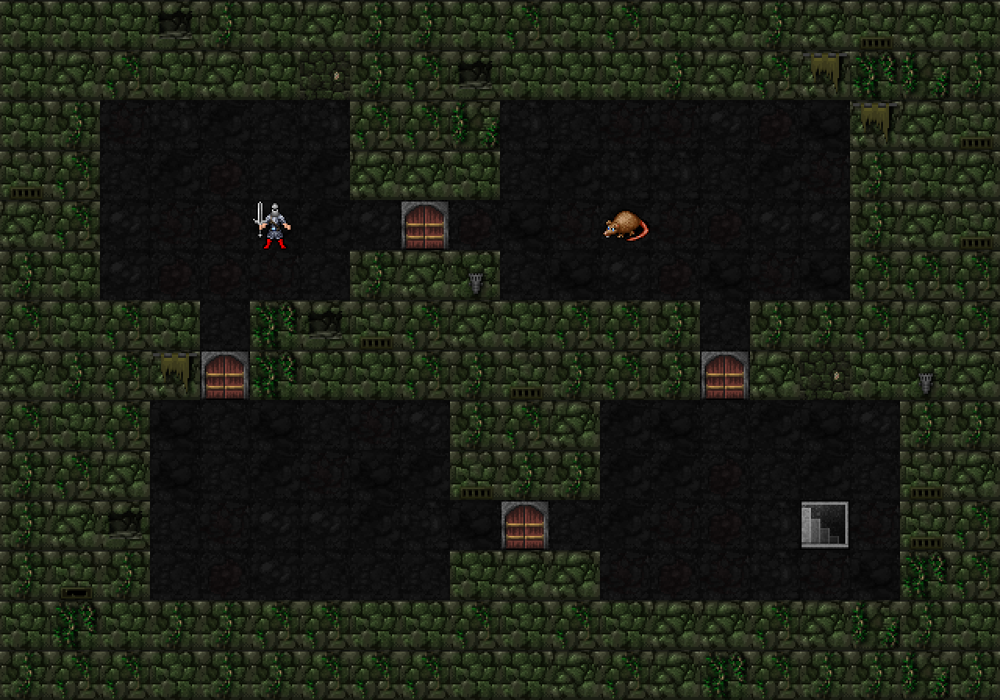
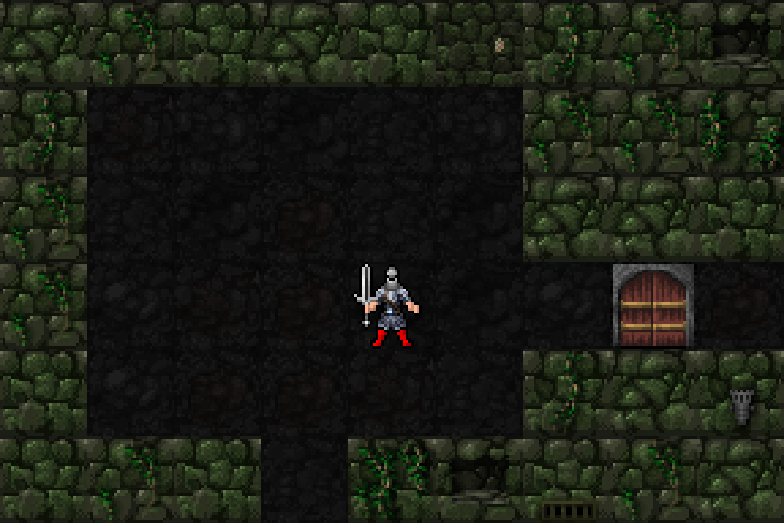

이전 시안의 밝은 보도·매끈한 블록 벽을 제외했습니다. 원본 돌죽 바닥8종·벽12종의 변형을 그대로 사용하고, 작은 공연 포스터가 붙은 벽 도트 하나만 새로 만들었습니다. 도시 테마를 완성한 버전이 아닌 미술 방향 확인용입니다.

20×14칸의 고정 방·복도 배치에 타일을 조합한 시안입니다. 실제 엔진 캡처·절차 생성·이동/충돌 구현은 아닙니다. 기존 캐릭터·쥐·계단은 크기 비교용입니다.

모든 타일은32×32이며 확대에는 부드럽게 만드는 필터를 쓰지 않았습니다. 원본 벽·바닥의 밀도와 어두운 색조를 유지하고, 공연장 요소는 작게 섞는 방향입니다.
일반 실행본은 ayame-zanshin02 유지. 다음 단계는 이 질감 기준이 맞는지 확인한 뒤 공연장 요소와 새로운 배경 타일을 조금씩 확장하는 것입니다.